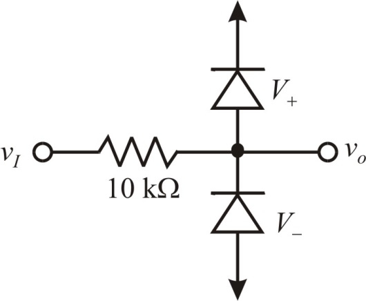

The sine wave output is
Here,
 is amplitude of sine wave
is amplitude of sine wave
 is time period of the waveform
is time period of the waveform
Determine the slope of the sine wave at .
The sine wave output is
Here,
is amplitude of sine wave
is time period of the waveform
Determine the slope of the sine wave at .
The slope of the triangular wave is,
The zero-crossing slope of the sine wave should match with the slope of the triangular wave.
Determine the clamping voltages.

Thus, the clamping voltages chosen are .
Draw the two-segment sine wave shaper circuit.

Figure 1
Thus, the two-segment sine wave shaper circuit is drawn.